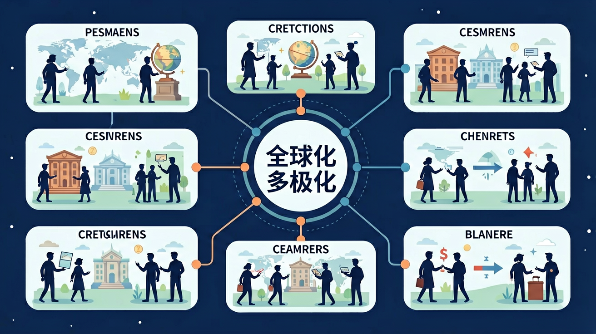

了解世界历史发展的多样性，理解和尊重世界各国、各民族的文化传统，具有广阔的国际视野，树立正确的文化观。

🎯 能说出全球化与多极化的基本定义
🎯 能分析全球化对发展中国家经济的影响
🎯 能判断多极化趋势中的主要国际力量
❓ 为什么美国总在全球化里当老大？
❓ 多极化是不是就是几个国家一起管世界？
❓ 全球化让我们的生活变好了还是变坏了？
学完这一课，这些问题你都能自信地回答。
下列哪项是全球化典型表现？
多极化格局最早显现于？
全球化与多极化是高中历史的重要内容。了解世界历史发展的多样性，理解和尊重世界各国、各民族的文化传统，具有广阔的国际视野，树立正确的文化观。
通过中外历史上重要的事件、人物和现象，展现人类社会从古至今、从分散到整体、从低级到高级的发展历程。
点击时代按钮切换世界格局；结合本课主题观察空间分布。
把卡片拖到核心概念 / 方法技能 / 应用情境 / 常见误区。
拖完 4 项后自动判分。
迁移任务：找一道与「全球化与多极化」相关的练习题或生活情境，用本课方法完整解答一遍。
两极格局结束后，世界多极化趋势加强，经济全球化加速，跨国公司、国际贸易与信息化深刻改变世界。全球化带来发展机遇，也扩大风险与不平等；中国等新兴力量推动更加公正的国际秩序。
经济：贸易投资科技互联；政治：一超多强与多强并立趋势。评价要辩证：机遇与挑战并存。
常见误区：常见误区是把全球化等同于美国化，或否定多极化趋势。
当今世界政治发展趋势之一是？
应用一：跨境电商供应链优化。宁波港2023年处理的跨境包裹中，73%采用智能分拣系统，这些系统需要加载WTO《贸易便利化协定》（TFA）的232项标准数据。工程师必须理解多边贸易规则与技术参数的映射关系，例如原产地证书（CO）电子化使清关时间从48小时压缩至90分钟。
应用二：国际抗疫合作中的标准博弈。科兴疫苗在印尼的本地化生产（2021）涉及42项技术转移条款，核心是处理WHO预认证（PQ）与BPOM认证的差异。这要求医药代表既懂ISO13485质量管理体系，又清楚《生物多样性公约》（CBD）对病毒株跨境转移的限制。
应用三：碳足迹计算器的算法设计。苹果公司2025年实现碳中和的承诺，需要精确计算iPhone组件从刚果钴矿到郑州组装的碳排放。程序员必须整合UNFCCC国家清单报告、国际航运IMO 2020低硫令等137类数据源，这本质是将《巴黎协定》第6条市场机制转化为代码逻辑。
问题一：当新加坡用《多元文化主义白皮书》（1989）管理宗教和谐时，法国却立法禁止公立学校佩戴宗教标志（2004），这两种应对文化全球化的模式，底层逻辑差异何在？分析线索：比较两国殖民地历史（莱佛士1819年登陆vs法兰西第三共和国殖民体系），注意新加坡《维持宗教和谐法》第17条"社区修复令"与法国《世俗主义原则》第1款的立法技术差异。
问题二：观察2023年沙特主权财富基金（PIF）同时投资美国Lucid电动车和中国华人运通，而挪威养老金却减持特斯拉股票，这种资本流动的多向性如何重构传统的"核心-边缘"（Core-Periphery）理论？思考方向：追踪PIF近五年在NEOM智慧城（沙特）、软银愿景基金（日本）、黑石基础设施（美国）的投资组合，注意主权基金年报中"地缘经济对冲"（Geoeconomic Hedging）策略的表述变化。
先要破除"哥伦布1492年发现新大陆即全球化开端"的简单叙事——大航海时代前的丝绸之路已形成跨大陆贸易网（威尼斯商人马可·波罗经此路线耗时4年到达元大都）。接着需要审视工业革命如何通过三股力量加速全球化：蒸汽船使跨大西洋航程从2个月缩至2周（1838年"天狼星号"首航）、电报让伦敦至孟买信息传递从半年变为5分钟（1870年海底电缆竣工）、金本位制（1880-1914）将各国货币绑定在4.8665克黄金/英镑的标准上。当这种单极秩序在二战中崩塌，1944年布雷顿森林体系用1盎司黄金=35美元的固定汇率搭建新框架，但真正质变发生在1995年WTO成立时，其《服务贸易总协定》（GATS）首次将教育、医疗等160个领域纳入谈判。此时多极化开始显现：2001年多哈回合谈判因G21集团抵制而停滞，2013年中国提出"一带一路"倡议（截至2023年涉及147国），2020年RCEP协定创造全球30%GDP的经济圈。最后要看到数字技术的颠覆性——当Zoom在疫情期间日活用户从1000万飙至3亿（2020），TikTok算法推荐机制引发欧盟《数字服务法》（DSA）立法，这已不是传统意义上的商品流动，而是数据主权与算力霸权的全新博弈场。
误区一：将全球化等同于西方化。学生常引用麦当劳全球门店数（4万+）或好莱坞电影市场份额（65%）作为论据，实质混淆了文化传播与价值替代的区别。认知根源在于将20世纪后期的"华盛顿共识"（Washington Consensus）错误投射到整个历史进程。实际上，2023年TikTok用户超15亿、印度宝莱坞年产量1800部电影，证明全球化正在形成多中心文化生态。
误区二：认为多极化必然导致冲突。学生常以美苏冷战（1947-1991）类比当前国际关系，忽视G20国家贸易依存度（平均38.7%）的现实约束。这种线性思维源于对"修昔底德陷阱"（Thucydides Trap）的机械套用。金砖国家新开发银行（NDB）2022年放贷规模达317亿美元，展示出制度性合作的可能。
误区三：把逆全球化（Deglobalization）视为历史倒退。学生看到英国脱欧（2016）或美国加征钢铝关税（2018）就断言全球化终结，未注意到全球数字服务贸易仍保持12.4%年增长。这是将周期性调整误判为趋势逆转，正如19世纪铁路技术（1830-1870）曾引发类似争议，最终催生更深度全球化。
复制提示词到 AI 学伴，生成「全球化与多极化」的时间轴或事件提纲；也可以上传你手绘的示意图，请 AI 学伴点评。
复制后可粘贴到 AI 学伴继续对话。
关于全球化与多极化关系，正确的是？
分析中国与中东欧17+1合作机制案例
关于全球化与多极化的学习，哪种做法最科学？
选一个并查看反馈。
先独立作答，再点选项查看对错与错因。
义乌商家为中东客户特别设计金色圣诞树，反映了全球化中的什么现象？
下列哪项最能说明当前全球经济多极化特征？
新冠疫情导致义乌圣诞用品出口下降，说明全球化具有？
材料中义乌商品销往200多国，体现全球化____特征；针对不同地区调整设计则体现____特征。
答案：普遍性,多样性
前者强调范围广，后者强调差异保留
金砖国家合作机制属于____极化的重要表现，其GDP总量已占全球____%以上。
答案：多,25
考查新兴经济体群体性崛起数据
✅ 指出欧盟、中国等也是重要参与者
💡 媒体片面报道导致认知偏差
✅ 强调是国际关系民主化进程
💡 将复杂概念简单对立化
口诀：经济文化全球跑，权力不再一家搞
类比：像班级从班主任独管变为班委会共治
（真题）金砖国家扩员最直接反映：
（迁移）若某国同时加入RCEP和CPTPP，说明：
（应用）分析TikTok听证会事件体现的实质是：
点击节点跳转到对应章节；可切换布局。